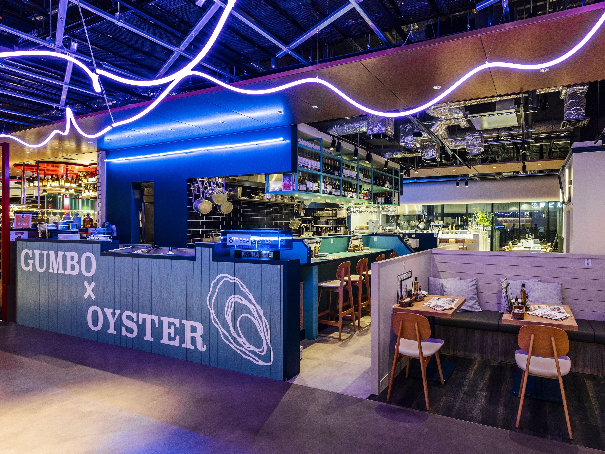
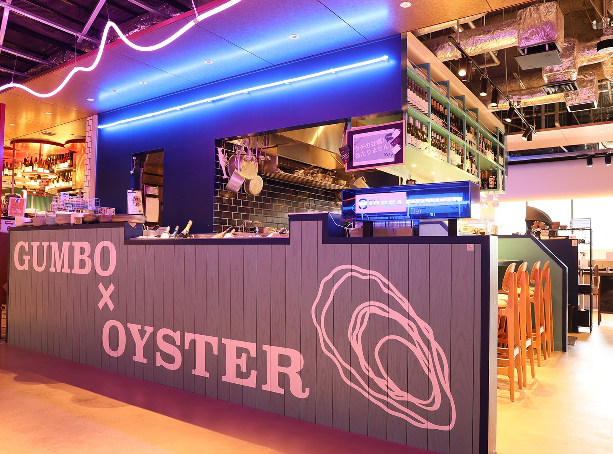
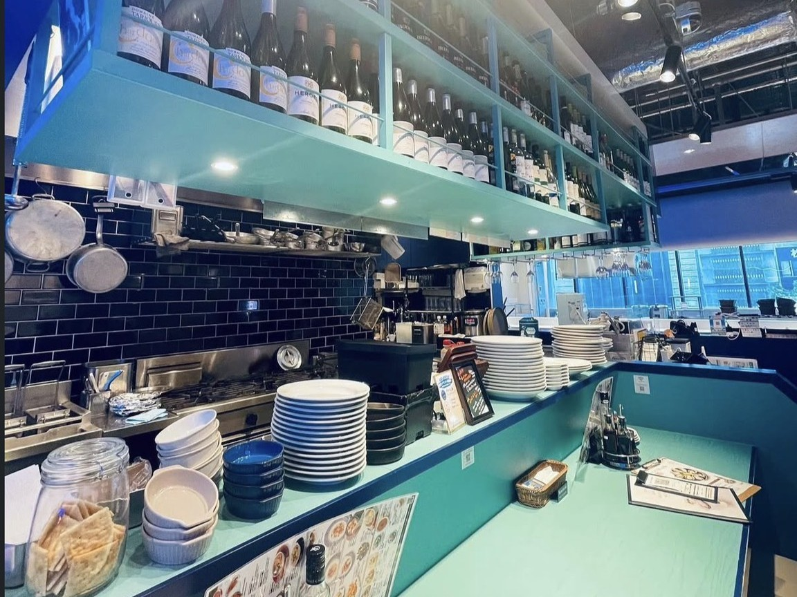
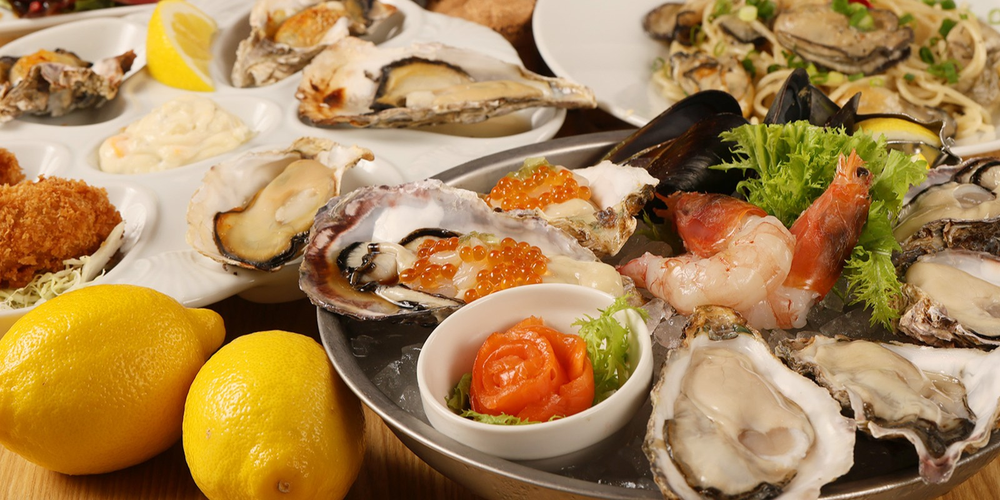
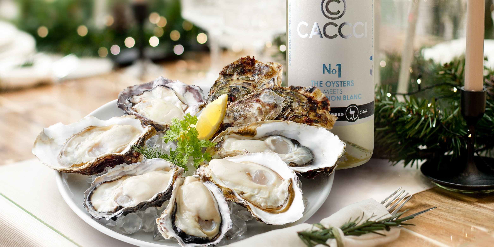

Oysters × Italian
Food & Drink
We offer a variety of dishes that bring out the charm of the ingredients, such as pasta, risotto, cold and hot dishes.
Each dish offers a unique taste.
MORE


Satisfy your five senses,
Enjoy the ultimate oyster experience.
We believe in the original power of a single oyster.
In order to deliver it at the most delicious moment,
Everything about ingredients, cooking, and space
It is carefully arranged.
Unique to the open kitchen
With a live feeling
"Experiential value that can only be experienced here"
continue to create.


Oysters × Italian
Food & Drink
We offer a variety of dishes that bring out the charm of the ingredients, such as pasta, risotto, cold and hot dishes.
Each dish offers a unique taste.
MORE

The charm of oysters
About Oyster
Thoroughly purified with deep sea water to maintain safety and freshness
We offer carefully selected high-quality oysters according to season and production area.
I'm doing it.
MORE

COCONO SUSUKINO 4F, Minami 4-jo Nishi 4-chome, Chuo-ku, Sapporo, Hokkaido 064-0804
TEL: 011-215-1319
Google Map Review
We are offering a complimentary drink to customers who post a review on Google Maps when they visit our store!
RECRUIT
We are looking for people who love seasonal oysters and wine. Would you like to work with us to create a service that satisfies your five senses in a luxurious space?
Recruiting full-time employees
10:00–20:00 / 14:00–24:00
We welcome people who want to refine their store experience as core members of the hall kitchen.
Part-time job recruitment
10:00–16:00 / 17:00–23:00
It is completely possible to adjust your time depending on your studies or work. We provide careful support even for those with no experience.
Shifts are flexible. Please contact us according to your studies, work, or family circumstances.
Please feel free to come and have a meal and check out the atmosphere. Consultations and applications over the phone are also welcome.